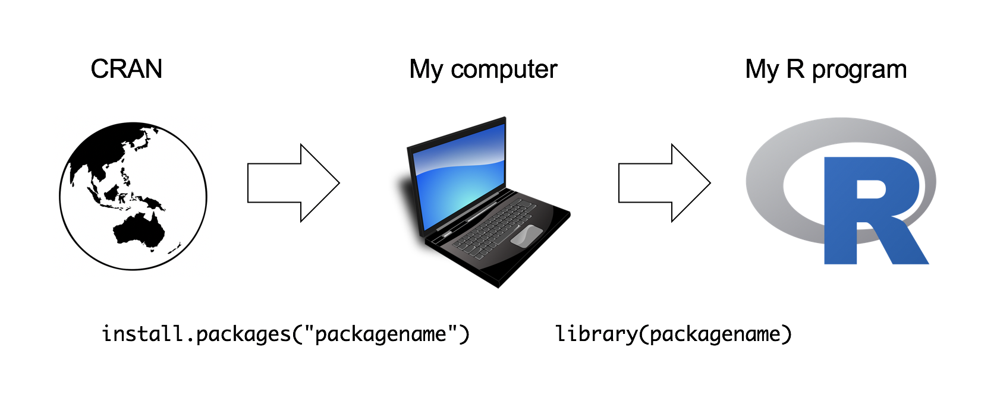

You can do a lot with the basic operators like +, -, and *, but to do more advanced calculations you’re going to need to start using functions.1
R has a lot of very useful built-in functions. Suppose I wanted to take the square root of 225. The usual notation for this is \(\sqrt{25}=5\), though sometimes you’ll also see it written like this \(25^{0.5} = 5\). This second way of writing it is kind of useful to “remind” you of the mathematical fact that “square root of \(x\)” is actually the same as “raising \(x\) to the power of 0.5”. And since we already know how to raise things to powers in R, we could do this:
225 ^ 0.5## [1] 15However, we could also compute this using R’s built-in square root function sqrt():
sqrt(225)## [1] 15Not sure what a particular function does? You can ask R for help by typing ? and then the function name, and R will return documentation on the function. For example, ?sqrt() will return information about the sqrt() function.
| Function | Description | Example |
|---|---|---|
exp() |
Exponential | exp(0) returns 1 |
sqrt() |
Square root | sqrt(64) returns 8 |
log(x) |
Natural log of x |
log(1) returns 0 |
factorial() |
Factorial | factorial(5) returns 120 |
round(x, digits=0) |
Round x to the digits decimal place |
round(3.1415, digits=2) returns 3.14 |
abs(x) |
Absolute value of x |
abs(-42) returns 42 |
In the same way that R allows us to put multiple operations together into a longer command (like 1 + 2 * 4 for instance), it also lets us put functions together and even combine functions with operators if we so desire. For example, the following is a perfectly legitimate command:
sqrt(1 + abs(-8))## [1] 3When R executes this command, starts out by calculating the value of abs(-8), which produces an intermediate value of 8. The command then simplifies to sqrt(1 + 8). To solve the square root2 it first needs to add 1 + 8 to get 9, at which point it evaluates sqrt(9), and so it finally outputs a value of 3.
When we use a function to do something, we generally refer to this as calling the function. The values that we type into the function are referred to as the arguments of that function. Some functions can have more than one argument.
Some functions have more than one argument. For example, the round() function can be used to round some value to the nearest whole number. For example, I could type this:
round(3.1415)## [1] 3Pretty straightforward. However, suppose I only wanted to round it to two decimal places: that is, I want to get 3.14 as the output. To do this, you can input a second argument that specifies the number of decimal places that you want to round the number to. To get 3.14, I would type this:
round(3.14165, 2)## [1] 3.14In this simple example, it’s not too hard to remember which argument comes first and which one comes second, but it starts to get very difficult once you start using complicated functions that have lots of arguments. Fortunately, most R functions use argument names to make your life a little easier. For the round() function, for example, the number that needs to be rounded is specified using the x argument, and the number of decimal points that you want it rounded to is specified using the digits argument:
round(x = 3.1415, digits = 2)## [1] 3.14Notice that the first time I called the round() function I didn’t actually specify the digits argument at all, and yet R somehow knew that this meant it should round to the nearest whole number. How did that happen? The answer is that the digits argument has a default value of 0, meaning that if you decide not to specify a value for digits then R will act as if you had typed digits = 0. This is quite handy: most of the time when you want to round a number you want to round it to the nearest whole number, and it would be pretty annoying to have to specify the digits argument every single time. On the other hand, sometimes you actually do want to round to something other than the nearest whole number, and it would be even more annoying if R didn’t allow this! Thus, by having digits = 0 as the default value, we get the best of both worlds.
Finally, not all functions have (or require) arguments:
date()## [1] "Mon Apr 27 12:35:12 2020"In R, all “assignments” have this form:
objectName <- valuewhere the arrow, <-, means “assign value to objectName”.
The operator <- is a pain to type, so RStudio has a keyboard shortcut: Alt + - (the minus sign). RStudio offers many other handy keyboard shortcuts. Also, Alt+Shift+K brings up a keyboard shortcut reference card.
To practice, try assigning 2 to x:
x <- 2Now type x again - notice that it returns the value assigned to it!
x## [1] 2If you overwrite an object with a different value, R will “forget” the previous assigned value and only keep the new assignment:
x## [1] 2x <- 42
x## [1] 42A note on formatting: Always surround <- with spaces! Otherwise your code can be confusing. For example, if you typed x<-2 (no spaces), it’s not clear if you meant x <- 2 or x < -2. The first one assigns 2 to x, but the second one compares whether x is less than -2.
You can choose almost any name you like for an object, as long as the name does not begin with a number or a special character like +, -, *, /, ^, !, @, or &. You will be wise to adopt a convention for demarcating words in names. Here are a few:
snake_case_is_one_choiceother.people.use.periodscamelCaseIsAlsoGoodMake another assignment:
this_is_a_really_long_name <- 2.5To inspect this, try out RStudio’s completion facility: type the first few characters, press TAB - voila! RStudio auto-completes the long name for you :)
R is case sensitive. To understand what this means, try this:
cases_matter <- 2^2
Cases_matter <- 2^3Let’s try to inspect:
cases_matter## [1] 4Cases_matter## [1] 8Although the two objects look similar, one has a capital “C”, and R stores that as a different object.
In general, type carefully. Typos matter. Case matters. Get better at typing.
Look at your workspace in the upper right pane. The workspace is where user-defined objects accumulate. You can also get a listing of these objects with commands:
objects()## [1] "cases_matter" "Cases_matter"
## [3] "this_is_a_really_long_name" "x"ls()## [1] "cases_matter" "Cases_matter"
## [3] "this_is_a_really_long_name" "x"If you want to remove the object named x, you can do this
rm(x)To remove everything, use this:
rm(list = ls())or click the broom in RStudio’s Environment pane.
Every programming language has the ability to store data of different types. R recognizes several important basic data types (there are 6 total, but these 4 are all we’ll ever use):
| Type | Description | Example |
|---|---|---|
| numeric | Numbers | 3.14, 42, 1.61803398875 |
| integer | A number with no decimal | 1L, 7L |
| character | Text data, a.k.a. “strings” | "this is a string", "3.14" |
| logical | Used for comparing objects | TRUE, FALSE |
To assess the type of any variable, R has two different functions:
class() tells us the high level object typetypeof() tells us the low level object typeWe’ll use these to explore each data type.
Numbers in R are of the numeric data type, and it is the default computational type. There are two types of numeric data types: integers and floats. The difference is floats have decimals and integers don’t. At the lower level, floats have the type “double” while integers have the type “integer”.
By default, R assumes all numbers are floats, even if it looks like an integer:
class(3.14)## [1] "numeric"class(3)## [1] "numeric"typeof(3.14)## [1] "double"typeof(3)## [1] "double"The fact that 3 is not an integer can be confirmed with the is.integer()function:
is.integer(3)## [1] FALSETo make a number an integer, you have to either add an L to the end, or use the as.integer() function to coerce it into an integer type:
typeof(3L)## [1] "integer"typeof(as.integer(3))## [1] "integer"Note that you can have a decimal of 0 but the data types can be different:
typeof(7)## [1] "double"typeof(7.0)## [1] "double"typeof(7L)## [1] "integer"A character object is used to represent string values in R. Anything put between single quotes ('') or double quotes ("") will be stored as a character. For example:
s <- '3.14'
class(s)## [1] "character"Notice that even though the value assigned to s is a number, it is stored as a character because the number is surrounded by quotes. If you mistakenly thought it was stored as a number, R will gladly return an error when you try to do a numerical operation with it:
s + 7## Error in s + 7: non-numeric argument to binary operatorWe can also convert objects into character values with the as.character() function:
a_number <- 3.14
class(a_number)## [1] "numeric"a_string <- as.character(a_number)
class(a_string)## [1] "character"We will go into much more detail about character data later on in Week 6
A logical value is usually created when comparing variables. For example, let’s compare whether one value is greater than another:
x <- 1
y <- 2
z <- x > y # Is x greater than y?
z## [1] FALSEThe object z now stores the value (FALSE) that resulted from comparing x and y.
To compare whether two values are equal, you have to type the = sign twice:
x == y## [1] FALSEHere I am asking, “is x equal to y”? In this case, the answer is FALSE.
We will go into more detail about comparing values in R later on in Week 4
In addition to the four main data types mentioned, there are a few additional “special” types: Inf, NaN, NA and NULL.
Infinity: Inf corresponds to a value that is infinitely large. You can also have -Inf. The easiest way to get Inf is to divide a positive number by 0:
1/0## [1] InfNot a Number: NaN is short for “not a number”, and it’s basically a reserved keyword that means “there isn’t a mathematically defined number for this.” For example:
0/0## [1] NaNNot available: NA indicates that the value that is “supposed” to be stored here is missing. We’ll see these much more when we start getting into data structures like vector, matrices, and data frames.
No value: NULL asserts that the variable genuinely has no value whatsoever, or does not even exist.
In general, you can force an object into a different type using as.something(), replacing “something” with a data type:
as.numeric(3.1415)## [1] 3.1415as.integer(3.1415)## [1] 3as.character(3.1415)## [1] "3.1415"as.logical(3.1415)## [1] TRUENote that as.logical() returns TRUE for any numeric value other than 0, for which it returns FALSE.
If you try to coerce a string into a number, R will return NA:
as.numeric('foo')## Warning: NAs introduced by coercion## [1] NAIf you want to force a float number (i.e. one with decimals) into an integer value, but you don’t want to change the actual type to an integer type, use round(), ceiling(), or floor(). This will turn the number into an integer in value, but will still technically be float types. Note that these functions produce different outcomes.
round(3.1415) # Typical rounding## [1] 3ceiling(3.1415) # Rounds *up* to nearest integer## [1] 4floor(3.1415) # Rounds *down* to nearest integer## [1] 3When you start R, it only loads the “Base R” functions. But there are thousands and thousands of additional functions stored in packages.
There is a critical distinction that you need to understand, which is the difference between having a package installed on your computer, and having a package loaded in an R session. You only need to install a package to your computer once, but you will need to load it whenever you want to use it in any one R session. This relationship is illustrated in the image below:

When installing a package, you must put the package name in quotes:
install.packages("packagename") # This works
install.packages(packagename) # This doesn't workWhen loading a package in an R session, you don’t have to use quotes (but you can if you want):
library("packagename") # This works
library(packagename) # This also worksAs an example, try installing the Wikifacts package, by Keith McNulty:
install.packages("wikifacts") # Remember - you only have to do this once!Now that you have the package installed on your computer, try loading it using library(wikifacts), then trying using some of it’s functions:
library(wikifacts) # Load the librarywiki_randomfact()## Here's some news. In the South Korean legislative election, the ruling Democratic Party and their allies increase their majority in the National Assembly. (Courtesy of Wikipedia)wiki_didyouknow()## Did you know that the Federal Communications Commission found that the owner of Maine radio station WKZX had "abdicated financial control" of the business? (Courtesy of Wikipedia)In case you’re wondering, the only thing this package does is generate messages containing random facts from Wikipedia.
If you use the is.integer() function to check if a number that looks like an integer, you might get a surprising result:
is.integer(7)## [1] FALSEThis is because the default numeric type is a float. The safer way to check if a number is an integer in value is to compare it against itself as an integer:
7 == as.integer(7)## [1] TRUEIn your assignments, use this method to check if something is an integer!
Page sources:
Some content on this page has been modified from other courses, including:
Footnotes
Technically speaking, operators are functions in R: the addition operator + is a convenient way of calling the addition function '+'(). Thus 10+20 is equivalent to the function call '+'(20, 30). Not surprisingly, no-one ever uses this version.↩︎
R does support complex numbers, but unless you explicitly specify that you want them it assumes all calculations must be real valued. By default, the square root of a negative number is treated as undefined: sqrt(-9) will produce NaN (not a number) as its output. To get complex numbers, you would type sqrt(-9+0i) and R would now return 0+3i.↩︎